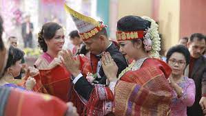
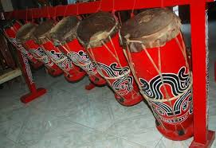
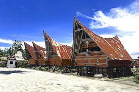
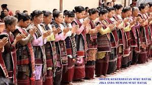
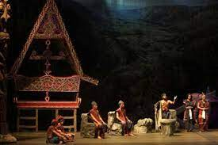
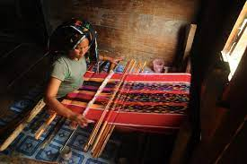

Kebudayaan Indonesia memiliki keanekaragaman yang luar biasa, termasuk keistimewaan etnik dari Suku Batak Toba. Suku Batak Toba memiliki beragam tradisi, tarian, upacara, dan keunikan budaya lainnya. Berikut ini beberapa elemen budaya yang menarik dari Suku Batak Toba:
1. Tari Tortor

Tari Tortor adalah salah satu tarian tradisional yang sangat penting bagi Suku Batak Toba. Tarian ini sering ditarikan dalam acara adat seperti pernikahan, upacara adat, dan festival budaya. Tortor melibatkan gerakan dinamis dengan irama musik yang khas serta dipenuhi dengan gerakan-gerakan ritmis yang menggambarkan kegembiraan dan semangat persatuan.
2. Upacara Adat
Upacara adat dalam kehidupan Suku Batak Toba memiliki peran yang sangat penting. Salah satu upacara yang terkenal adalah 'Pesta Raja' atau 'Pesta Siraja' yang merayakan kekuasaan raja atau pemimpin adat. Upacara adat lainnya melibatkan serangkaian ritual yang melibatkan musik, tari, nyanyian, dan adat istiadat yang khas.
3. Gondang Sabangunan
Gondang Sabangunan adalah musik tradisional Suku Batak Toba yang dimainkan dengan alat musik khas seperti gondang (gendang), sordang (seruling), dan sorompot (kalebong). Musik ini sering dimainkan dalam acara adat dan memiliki nilai penting dalam menjaga identitas budaya suku.
4. Arsitektur Rumah Adat
Rumah adat Batak Toba, yang disebut Rumah Bolon, memiliki arsitektur khas. Rumah ini memiliki atap tinggi dengan struktur kayu yang kokoh dan dinding berukir yang menggambarkan kekayaan simbolik dan kepercayaan Suku Batak Toba.
5. Adat Istiadat
Suku Batak Toba memiliki berbagai adat istiadat yang kaya, termasuk adat perkawinan, upacara pemakaman (adat martumpol), serta adat dalam kehidupan sehari-hari yang masih dijaga hingga saat ini.
6. Kesenian Lisan
Selain tarian dan musik, kesenian lisan seperti dongeng, lagu-lagu tradisional (gondang hata), dan syair-syair kuno juga menjadi bagian penting dari budaya lisan Suku Batak Toba.
7. Tenunan Ulos
Ulos merupakan kain khas Suku Batak Toba yang dihasilkan melalui tenun tradisional. Ulos memiliki makna simbolis yang dalam dalam kehidupan masyarakat Batak, sering digunakan dalam berbagai upacara adat, pernikahan, dan sebagai simbol kebersamaan dan kehangatan.
Keanekaragaman budaya Suku Batak Toba merupakan bagian yang kaya dan unik dari warisan budaya Indonesia. Elemen-elemen ini tidak hanya memperkaya kekayaan budaya Indonesia tetapi juga menjadi bagian penting dalam identitas etnik dan tradisi yang harus dilestarikan.